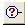

Options page (Dimension Tracker dialog box)
- Track Changed Dimensions
-
Tracks dimension, annotation, and hole table changes on the drawing and lists the changes on the Dimension Tracker dialog box.
- Label Changed Dimensions
-
Labels the dimension, annotation, and hole table changes on the drawing.
- Balloon Shape
-
Specifies which balloon shape is used to label the changed dimensions and annotations on the drawing. Click the button to display a list of available shapes.
- Number Of Sides
-
Sets the number of sides of an n-sided balloon shape. You must click this balloon

in the Balloon Shape list to use the Number of Sides option. You can then type the value you want or select from the list. - Balloon Color
-
Specifies which balloon color you want from the list of available colors. The default is Dk Cyan.
- Annotation Moved Tolerance
-
Specifies the tolerance below which Solid Edge determines that an annotation has moved. The default for metric files is 0.50 mm; for English files is 0.02 in.